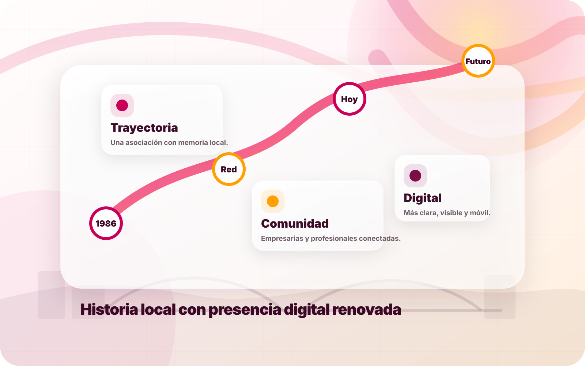
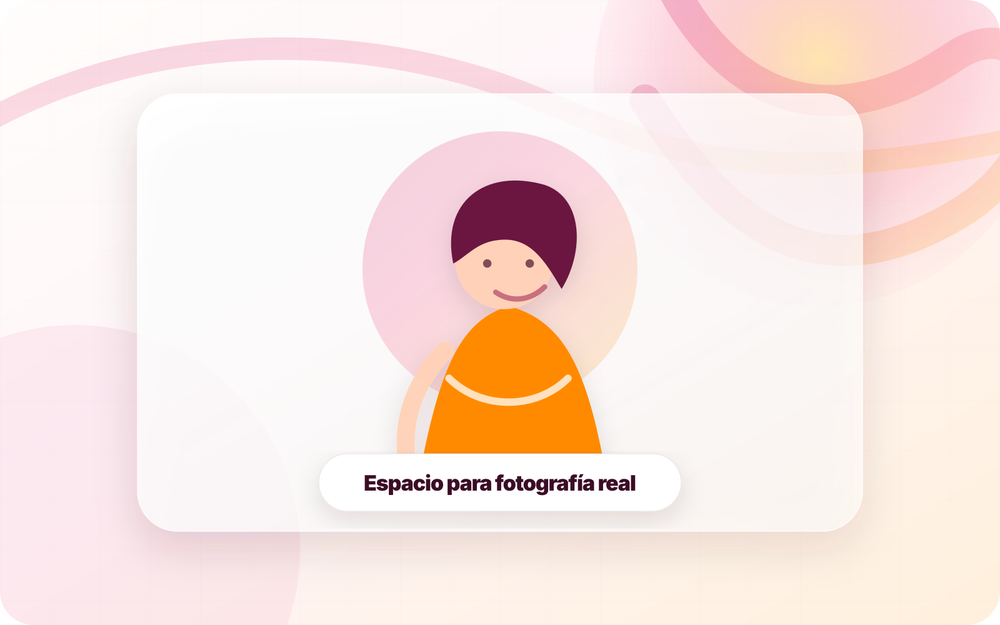

Cercanía
Una asociación local, humana y conectada con el tejido empresarial real de Ourense.
AME Ourense nace para apoyar a empresarias y profesionales de la provincia, creando una red que combina formación, representación, colaboración y visibilidad.

La asociación ha construido una trayectoria vinculada al emprendimiento, la formación y la participación activa de mujeres profesionales en Ourense.
Fundación de AME Ourense como punto de encuentro para empresarias y profesionales.
Impulso de conferencias, seminarios, información de interés y actividades para asociadas.
Una web moderna para ordenar su presencia online y facilitar la captación de socias.
Una asociación local, humana y conectada con el tejido empresarial real de Ourense.
Relaciones de confianza entre socias, empresas e instituciones.
Formación útil para mejorar gestión, comunicación y crecimiento.
Más presencia pública para referentes femeninos de la provincia.
“Cuando una empresaria se siente acompañada, su proyecto deja de crecer solo y empieza a crecer en red.”Mensaje editorial propuesto para AME Ourense
Esta sección está preparada para añadir fotografías, cargos y biografías de la junta directiva. El objetivo es transmitir transparencia, confianza y liderazgo.

Nombre y breve biografía editable. Espacio para destacar trayectoria y visión.

Perfil, empresa o sector profesional. Texto preparado para sustituir.

Responsabilidades, contacto institucional y apoyo a socias.